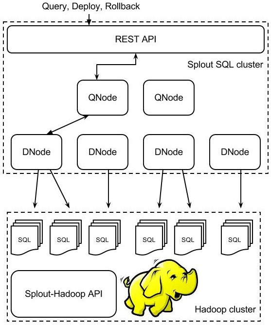

Splout SQL is a read-only DB. Because of this, the overall architecture is quite simple.
- Splout SQL is installed on a cluster of commodity hardware machines. Each of the machines runs a DNode service and optionally a QNode service (but there must be at least one QNode service among the cluster).
- QNodes implement a REST API for serving users' queries or receiving deploy / rollback requests.
- Because data is partitioned, QNodes talk to the appropriate DNode for serving a query and the DNode responds back with the query’s result.
- A Hadoop cluster is used for indexing and balancing the data. The resultant SQL files are fetched by the DNodes by handling a data deploy request.

Data balancing & indexing
Arbitrarily big datasets are handled by Splout by using a Hadoop batch process that partitions and indexes the data according to a users' partitioning policy.
- Usually this involves partitioning by one or more columns in a columnar dataset, for example customer_id. But you can also partition by an arbitrary Java or JavaScript function, for instance.
- Splout uses sampling methods for deciding how to split the dataset after applying users’ partitioning function.
- A simple method (a-la-Hadoop's TeraSort) is the default one, but a more sophisticated one - althought more computationally expensive - (Reservoir Sampling) can be used in datasets where the default one is not enough.
- The DNodes fetch new data on a deploy request. The data is downloaded, atomically replaced and versioned. The cluster coordinates itself for assuring version consistency and no downtime while deploying. The user can choose to rollback to previous versions anytime, and the operation will be as quick as a "mv" between folders.
Technology choices
- QNodes, DNodes are implemented as Java services serving queries through a Jersey REST interface.
- QNodes and DNodes communicate between them using Thrift.
- Splout SQL cluster handles membership and coordinates deployments and rollbacks through Hazelcast.
- Splout uses Pangool for low-level Java Hadoop development. In this way, the code for data store generation is pretty simple and performant at the same time.
- Splout generates SQLite files that are used by DNodes for serving data.